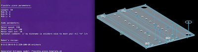

Computer Generated Robot Flex Piece
(aka Curl Mechanism pt 2)

Why
I was wondering if a robot’s behaviour could be programmed in its materials.
What if the flex piece was generated by a computer program. The robot’s behaviour stays the same, but the flexible piece changes, which makes the way it “eats” the light different.
Making of
Continuing from update 5, with the data from the two robots with different flex pieces I started to write a program that outputs what the parameters should be for a given input. The input is the location of a ldr sensor.
Ported the flex piece from Inventor to Antimony. It turned out to be better, because the pattern for the holes was easier to adjust given if the length changes.
The code of the robot tells the motor to reel in when the ldr does not see the light. When it does see the light, then reel out. The light is on for 3 secs, then off for 3 secs.
What changes with these robots is the actual observed behaviour, because of the flex piece.
The program modifies the length of the flexible piece, and the depth of the three ribs. The ribs are used to provide the return, and the longer the piece is chances are it will flop over.
Here was the first piece printed out that was created by a computer program!
The recipe of that one was:
5-1-2:40-4-4-2:213-50-15:epicurl
The program outputs a recipe of the robot! :)
Here’s what a different robot looks like (6-1-2:40-4-8-4:213-100-10:zzmm):
Uncurled:

Curled:
Here’s a short video of one of the robots in action:
(Sorry forgot to take a video of all of the robots moving)
Here’s a group shot of the robots. Their names are: Yllo, Epicurl, Eool, and Fun:
Python + Antimony
To create a python script that modifies an Antimony file, first created a template .sb file.
The bulk of the curl mech gen python script is just the “calculations” and prompting for user input. So here is how it modifies the Antimony template. It’s looking for the node named dim, because in Antimony this is a script node with all of my parameters in it. After it finds it, it’s just very simple to set the data and save it.
def generateSbModel():
with open(antimony_file, "r+") as json_file:
json_data = json.load(json_file)
#print(json_data['connections'])
#print(len(json_data['nodes']))
nodes = json_data['nodes']
name = "-"
dim_index = 99
for j in range(0, len(nodes)):
datums = nodes[j]['datums']
for i in range(0, len(datums)):
meep = datums[i]
if meep['name'] == "__name":
name = meep['expr']
#print(name)
if name == "dim":
dim_index = j
break
dim_datum = nodes[dim_index]['datums']
for i in range(0, len(dim_datum)):
meep = dim_datum[i]
# it seems like all the variables in the .sb file
# for expr are strings, so just going to set
# them all as strings too
if meep['name'] == "length":
json_data['nodes'][dim_index]['datums'][i]['expr'] = str(length)
if meep['name'] == "rib_l":
json_data['nodes'][dim_index]['datums'][i]['expr'] = str(rib_l)
if meep['name'] == "rib_m":
json_data['nodes'][dim_index]['datums'][i]['expr'] = str(rib_m)
if meep['name'] == "rib_r":
json_data['nodes'][dim_index]['datums'][i]['expr'] = str(rib_r)
json_file.seek(0)
json.dump(json_data, json_file, indent=4)
Future
Definitely want to keep exploring more about this idea. It’s just a start! Originally wanted more links so the generated robot could maybe move when it curls up. It would be interesting to see if these could be generated with a specific end effector, to do some task, then immediately curl up to protect it and use the locomotion to spin away.
Source Files
The source files can be found here
Mistakes made
- Using 3 screws to attach the flex piece instead of 2 screws and a bar between them. It would clamp more of the piece down, so it’s possible that some of the movement would be a tiny bit different
- Fun (the robot mentioned above) doesn’t work for some reason. Think there is something wrong with my soldering, but haven’t had the chance to check just yet. Ironic name...
Lessons learned
- Next time I try something like this, it might be better to have some more test examples to have data to base the program around
- The return on the piece has to be quite strong. Releasing the fishing line does not push the mechanism back into place.
- The left/right ribs and movement idea didn’t work out that great. Maybe next time try exploring it more to make one work first, then create the program from it
- It was so exciting when my first piece made by a computer program finished working and then was attached to the robot and worked!!!!!!
Still wondering about
- Areas where this can be useful in real life
- How to simulate flexible pieces to see how they move -- in Inventor or another program
- If it’s possible that there could be specific styles of robot that can emerge from the program, then within each style there could be subtle differences. Each style would behave differently, and the subtle differences could make each robot unique.